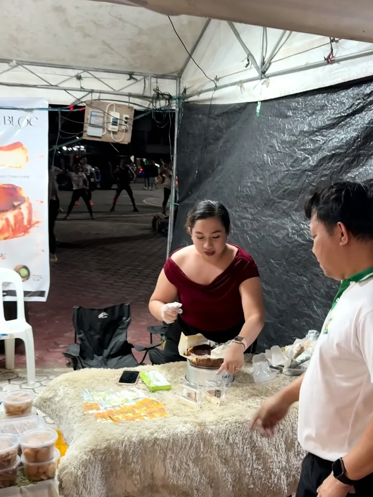
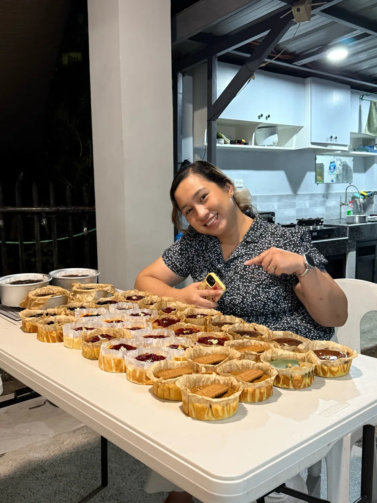
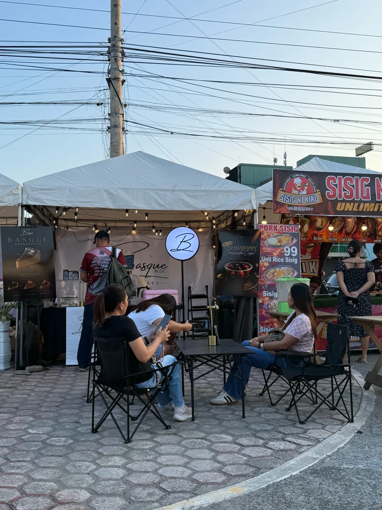
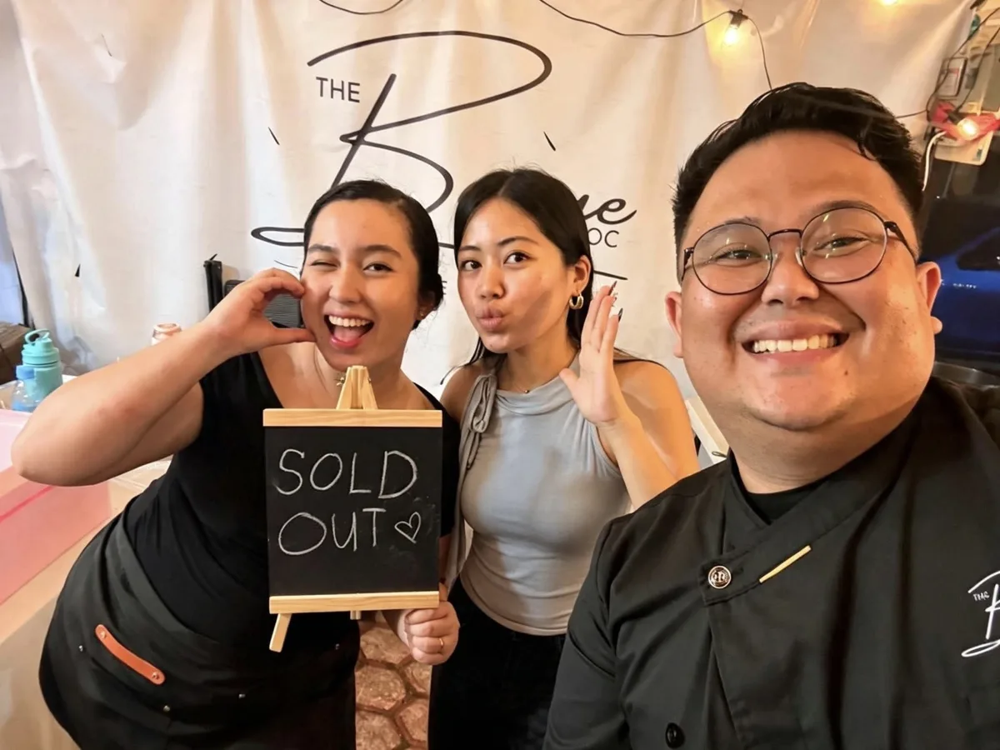
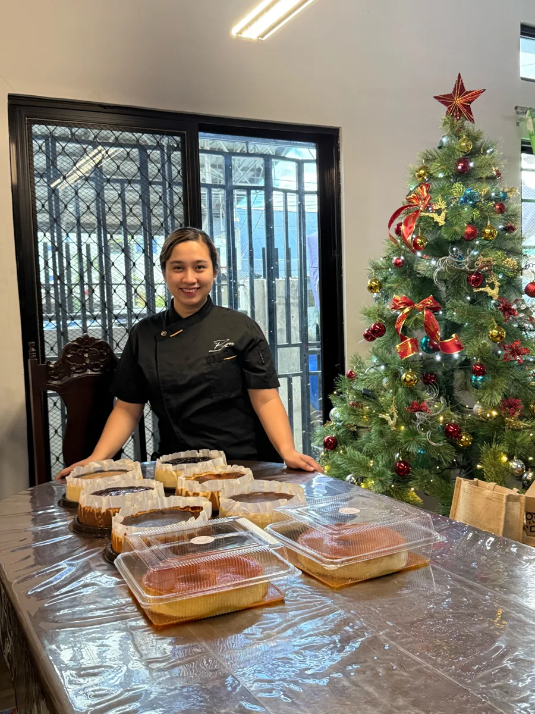
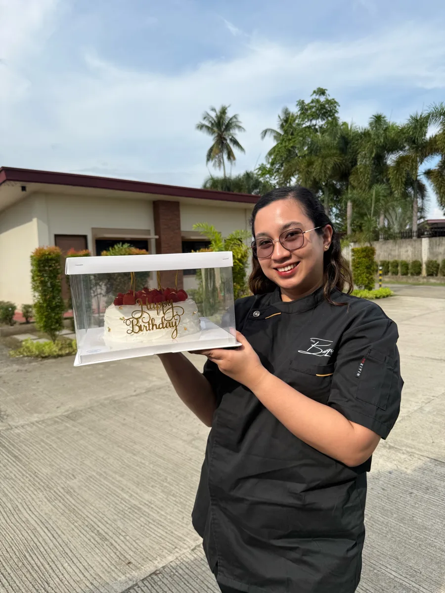
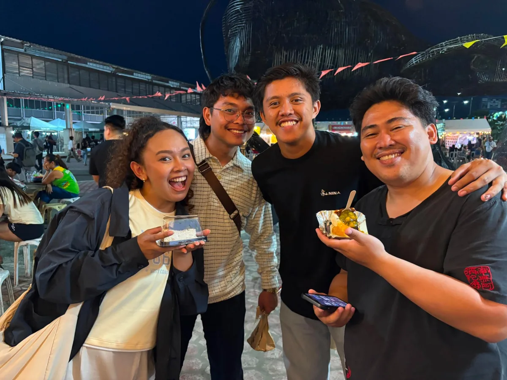

JULY 2025It started with one small tent
Basque Bloc Cheesecake was founded by Donna Abellana in July 2025. It began as a small pop-up journey: one tent at a local event, shared with two other sellers, and a cheesecake she believed people would love.


THE MONTHS THAT FOLLOWEDWord spread, slice by slice
In the months that followed, the customers kept growing. Every pop-up brought new faces and familiar ones coming back, and at one pop-up we were sold out for a whole week. Basque Bloc started bringing authentic Basque cheesecake to more tables across the Davao Region.


to the whole Davao Region.


A BRAND IS BORNGiving Basque Bloc its look
As orders reached their peak, Donna's husband stepped in to put the brand in the spotlight. A brand specialist by profession, he shaped the look and the experience of Basque Bloc Cheesecake, the same experience cheesecake lovers in the Davao Region enjoy today.
